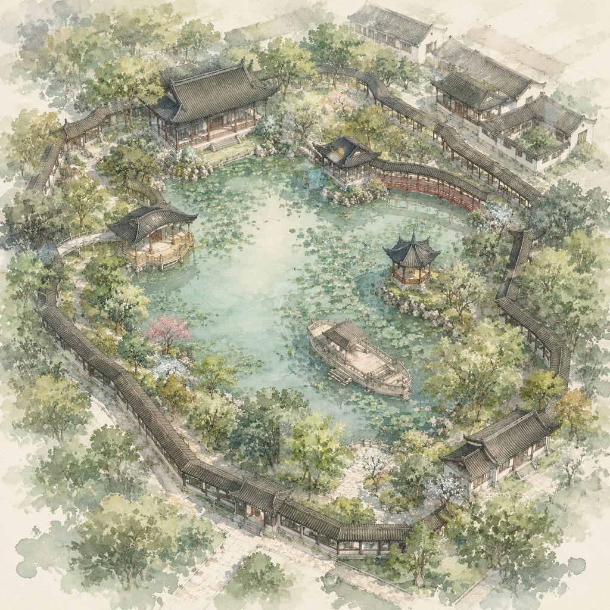

拙政园
苏州园林代表，内置精讲样板。
Suzhou AI Cultural Guide
苏州 AI Cultural Guide
我是苏丽娘，你的苏苏，你的苏州。
当前城市
今天想怎么逛苏州？
待机，点击开始后和苏丽娘对话
我听到
请开始语音对话苏丽娘
我会根据你的问题推荐路线、讲解景点或查找附近美食。
正在倾听
正在为你排路线
偏好
园林与古城轻松线
苏州园林代表，内置精讲样板。
小吃、咖啡、老街散步。
历史遗迹，作为可扩展示例。
当前景区
从路线节点进入景区讲解模式。

当前点位
与谁同坐轩扇形小轩，是最适合苏丽娘诗意讲解的点位。
正在讲解
这座扇形小轩，名字出自苏东坡的词：“与谁同坐？明月、清风、我。”窗、梁、石凳都呼应扇面，像把清风明月收进园中。
午餐建议
适合从拙政园出来后步行或短途打车过去。
清汤细面，适合轻松午餐。
甜口小食，适合边逛边吃。
可作为昆曲、江南文化延展体验。
已加入精讲样板。
推荐苏式汤面和桂花糖粥。
可扩展景区导览。